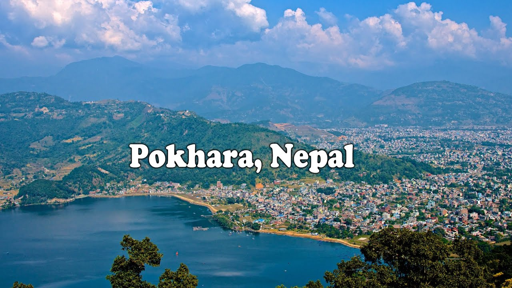

Place to visit in Nepal
Mount Everest
Mount Everest is Earth's highest mountain above sea level, located in the Mahalangur Himal sub-range of the Himalayas. The international border between Nepal and China runs across its summit point. Everest Base Camp is the most desirable and reachable place for tourists to take a panoramic view of Mount Everest – the highest peak in the world. Besides, it acts as Mt. Everest mountaineering headquarters Nepal is home to eight of the world’s 14 highest mountains, and mountain climbing is a key source of employment and income for the poor nation. Mount Everest attracts many climbers, some of them highly experienced mountaineers. There are two main climbing routes, one approaching the summit from the southeast in Nepal (known as the "standard route") and other from the north in Tibet.
Ilam
An excellent getaway from city life, Ilam is famous for its tea. It is a district largely covered in tea bushes with a hill town right beside a plantation enjoying views of pristine landscapes made up of sloping tea gardens, mountain streams, dense natural forests, holy sites and a unique culture. Using Ilam Bazaar as a base you can take excursions for a day or more. There are many hotels in the town and a few resorts a short distance away in the tea gardens.While the subtropical climate of Ilam ensures good weather most of the year, except during the monsoon when heavy rains engulf most of Nepal, the best time to visit is between October to December or from February to April.
Pathivara temple

Pathibhara Devi Temple. Pathibhara Devi (Nepali: पाथिभरा देवी मन्दिर) or Mukkumlung (as mentioned in Mundhum of Limbu people) is one of the most significant temples in Nepal, located on the hill of Taplejung. ... The temple is located 19.4 North East from Phungling municipality at an elevation of 3,794 m (12,444.32 ft). Pathibhara temple is reached by a steep climb, anywhere from 3 to 5 hours depending on your fitness. The old path has now been replaced by stairs. There are several villages where you can get refreshments during the first half of the climb. At the last village you can get overnight accommodations if you wish to do the final stage early in the morning. You can also hire a car in Taplejung to take you over a rough and bumpy 4WD road to the foot of the mountain.
Pokhara
Pokhara is an ideal destination for all kinds of tourists belonging to all age groups. From hills to lakes and from markets to shrines; tourist places to visit in Pokhara are in surplus despite the small geographical area occupied by the city. Whether you are daredevil who wishes to get closer to the highest of the peaks by indulging in trekking or you are someone who wants to stay in the soothing embrace of nature by sailing a boat on the tranquil waters of a lake, Pokhara is the place to be. Whenever you plan to tour Nepal, make sure to add a couple of extra days to spend Pokhara.
Lumbini

Nestled in the Himalayas near the Indian border, the beautiful town of Lumbini is the birthplace of Lord Buddha. A UNESCO World Heritage Site, Lumbini has a plethora of ancient stupas dating back to 2000 years and monasteries that were built by the past dynasties. People come here from all over the world to this abode of Buddhism to study scriptures, meditate, practise yoga, trek, learn more about Buddhism and find inner peace. Buddhism, founded in North India, is not a religion in the strict sense but more a system of philosophy and a code of morality. Buddhism is now practised in all the major countries of the world but predominantly in Japan, Taiwan, China, Sri Lanka, Indo-Chinese countries, India, and Nepal.
Chitwan National Park.

Chitwan National Park is one of Nepal’s eight national parks. Established in 1973, the park covers an area of 577 square kilometers (359 square miles) and is home to seven different types of forest and jungle. The park was granted World Heritage Status in 1984. Located in the Terai Lowland of Nepal, 150 kilometers (93 miles) from capital city Kathmandu, it is possible to reach the park by flight from Kathmandu or by road. Buses run daily from Kathmandu to Bharatpur, with the most popular tourist hotspot being Sauraha, 20 minutes away. Flights go three times daily from Kathmandu Domestic Airport to Bharatpur Airport with Buddha Air and Yeti Airlines. Chitwan National Park is home to a myriad of wildlife and breathtaking scenery. Here are a few top tips to make the most of your visit.
Kathmandu

Kathmandu, Nepal's capital, is set in a valley surrounded by the Himalayan mountains. At the heart of the old city’s mazelike alleys is Durbar Square, which becomes frenetic during Indra Jatra, a religious festival featuring masked dances. Many of the city's historic sites were damaged or destroyed by a 2015 earthquake. Durbar Square's palace, Hanuman Dhoka, and Kasthamandap, a wooden Hindu temple, are being rebuilt.Pashupatinath Temple,Boudhanath Stupa,Swayambhu Temple and thamel are the mostly visited and beautiful places to visit in kathmandu. Kathmandu’s two main streets contrast strongly to the older sectors of narrow streets and brick houses adorned with carved doors and windows.
Mount API
Api is the highest peak in the Yoka Pahar Section of Gurans Himal, part of the Himalayas in the extreme northwest corner of Nepal, near the borders of India and Tibet. It is a little-known peak in a rarely visited part of the Himalayas, but it rises dramatically over the low surrounding terrain. Although low in elevation among the major mountains of Nepal, Api is exceptional in its rise above local terrain; the surrounding valleys are significantly lower than those surrounding most higher Himalayan peaks. Api Himal Expedition starts after you trek up to the Api Himal Base Camp at an altitude of (4,000m.). It takes about 20 days for you to attempt the summit during which you take days rest and construct different camps at different height for acclimatizing you.
Tilicho Lake
The Tilicho Lake trek takes the trail through Manang to the highest altitude lake in the world – Tilicho Lake at 4919 m Passing through lush subtropical countryside, over moraine, through alpine forests, along arid cliffs, and over the Thorong La pass, this trek is quite challenging but steeped in Hindu myth and surrounded by mountains.Tilicho, Nilgiri, Khangsar, and Muktinath are some of the peaks on show around the lake – sometimes even being reflected in the cold, clear turquoise waters. And of course, views of the Annapurna accompany the visitor throughout the whole trek.
Muktinath
Muktinath is a Vishnu temple, sacred to both Hindus and Buddhists. It is located in Muktinath Valley at the foot of the Thorong La mountain pass in Mustang, Nepal. It is one of the world's highest temples. The site is close to the village of Ranipauwa, which is sometimes mistakenly called Muktinath."Our Religious Muktinath Tour Package main objective is to ease devotees in visiting Muktinath Temple located in the remote area of Nepal from Kathmandu, Pokhara, Chennai, Bangalore or Delhi providing various travel options. Here you can get all the information about the temple, its attraction, and various ways to get there, roadmap, the best time to travel, required permits and suggested tour itinerary."